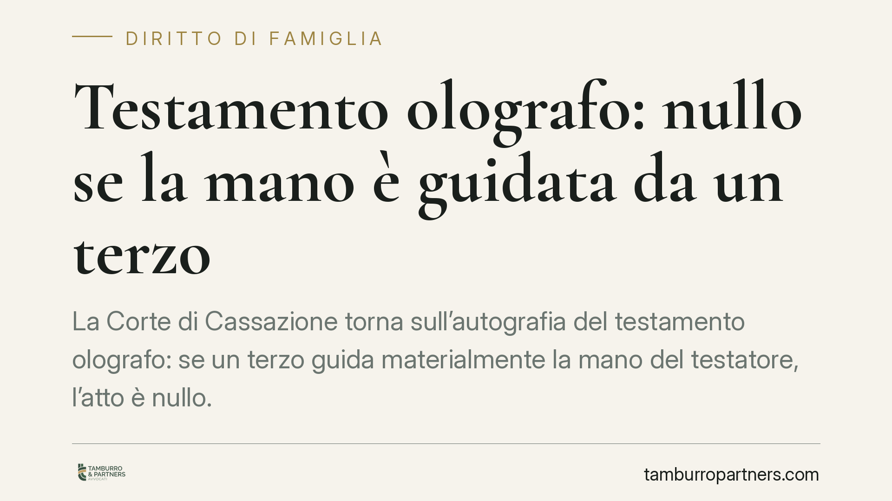

Testamento olografo: nullo se la mano è guidata da un terzo
La Corte di Cassazione torna sull'autografia del testamento olografo: se un terzo guida materialmente la mano del testatore, l'atto è nullo. Non conta che il contenuto rispecchi la reale volontà del defunto. Contano il requisito formale e la scrittura personale. Una decisione che incide sulle successioni familiari e impone attenzione a chi redige le proprie ultime volontà in condizioni di fragilità.

Il caso
Un testamento olografo viene contestato dagli eredi. La firma e il testo appaiono riconducibili al defunto, ma emerge che, nella fase di redazione, un terzo — nel caso esaminato un familiare — avrebbe sorretto e guidato la mano del testatore ormai debilitato.
Gli esperti grafologi forensi rilevano tracce di una scrittura non spontanea. La Cassazione conferma la nullità: quando la mano è materialmente diretta da altri, l'atto perde il carattere di autografia, indipendentemente dalla corrispondenza tra testo e volontà reale.
Inquadramento normativo
Il testamento olografo è disciplinato dall'art. 602 del Codice civile, che richiede tre requisiti: la scrittura per intero di mano del testatore (autografia), la data e la sottoscrizione. Sono elementi cumulativi: l'assenza anche di uno solo determina l'invalidità dell'atto.
L'autografia non è una formalità accessoria. È lo strumento con cui l'ordinamento garantisce che le disposizioni provengano davvero dalla persona che dispone dei propri beni. Serve a certificare la personalità e la spontaneità dell'atto, escludendo interferenze esterne che possano alterarne la genuinità.
L'art. 603 c.c. regola invece il testamento pubblico, ricevuto dal notaio: forma alla quale può ricorrere chi non è in grado di scrivere autonomamente. Proprio l'esistenza di questa alternativa spiega il rigore della giurisprudenza sull'olografo. Chi non può scrivere da sé ha una via legale sicura; forzare l'autografia con l'aiuto altrui non è una scorciatoia ammessa.
La distinzione è netta: un conto è la mano semplicemente appoggiata o sfiorata per stabilità, senza incidere sul tracciato; altro è la mano guidata, in cui la scrittura è di fatto opera del terzo. Nel primo caso l'atto può reggere; nel secondo è nullo.
Implicazioni pratiche
La pronuncia riguarda una situazione frequente: persone anziane o malate che vogliono disporre dei propri beni ma non hanno più piena autonomia nella scrittura. In questi contesti l'intervento di un familiare è spesso in buona fede, motivato dal desiderio di rispettare le volontà del congiunto.
La buona fede, però, non salva l'atto. Il testamento sarà comunque impugnabile e potrà essere dichiarato nullo. La conseguenza è pesante: se non esistono altri testamenti validi, si apre la successione legittima, cioè la ripartizione dell'eredità secondo le quote fissate dalla legge, che possono discostarsi sensibilmente dalle intenzioni del defunto.
Per chi ha interesse a contestare un olografo, la verifica grafologica diventa centrale. L'analisi della pressione, della fluidità del tratto e delle esitazioni può rivelare una scrittura non spontanea. Al contrario, chi vuole difendere la validità dell'atto deve poter dimostrare che la mano del testatore ha agito autonomamente.
Sul piano probatorio, l'onere grava su chi impugna: deve provare l'intervento manipolativo del terzo. È un accertamento tecnico, non una semplice affermazione.
Cosa fare in concreto
- Valutate il testamento pubblico quando il testatore ha difficoltà fisiche a scrivere: il notaio garantisce validità formale e riduce il rischio di contestazioni.
- Evitate qualsiasi aiuto materiale nella stesura dell'olografo: nessuno deve guidare, dirigere o completare la scrittura, nemmeno con le migliori intenzioni.
- Documentate le condizioni di redazione quando possibile: la presenza di testimoni sulla spontaneità dell'atto può sostenerne la validità in caso di lite.
- Consultate un legale prima di impugnare un olografo sospetto: consigliamo di far precedere ogni azione da una valutazione tecnica preliminare, così da stimare la fondatezza della contestazione.
- Conservate eventuali perizie grafologiche e i documenti sanitari relativi al periodo di redazione: sono elementi decisivi per l'accertamento dell'autografia.
La lezione è semplice. Il testamento olografo è uno strumento accessibile e gratuito, ma non tollera assistenze materiali. Chi non può scrivere da sé deve rivolgersi al notaio: è l'unica strada che coniuga rispetto della volontà e certezza giuridica.
---
*Contributo informativo a cura di Tamburro & Partners - Avv. Giuseppe Tamburro. Non costituisce parere legale.*
Ogni famiglia ha il suo equilibrio.
Separazione, divorzio, affidamento, assegno: se vuoi un confronto riservato su una specifica situazione, scrivi allo studio. Ti rispondiamo entro un giorno lavorativo.